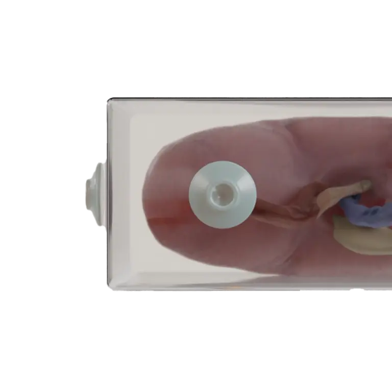
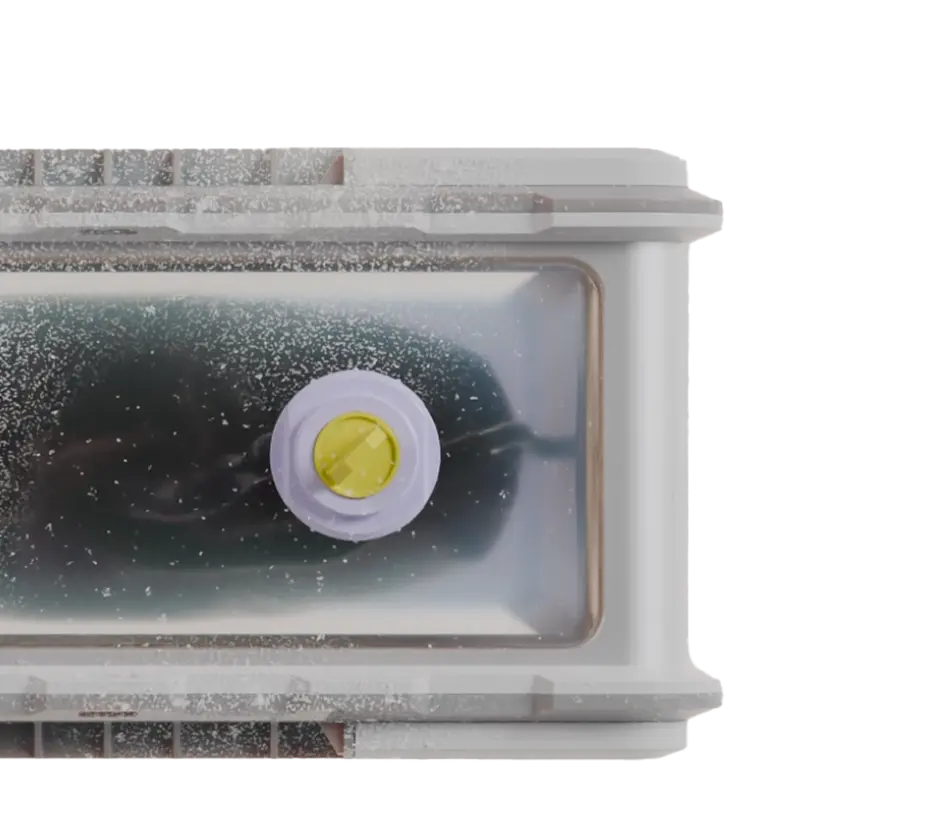

Biocompatible Cryoprotectants
Until’s Cryprotectant Discovery Engine: from a few dozen to over 250,000 candidates
Arash, Hunter, and Katherine

We build technology to safely prevent ice formation during the vitrification process
[ Scroll to discover ]
We translate the fundamentals of cryobiology into engineered workflows that safely and reversibly preserve donor organs.


Explore how we are advancing this technology across five dimensions: perfusion, cryoprotectants, cooling, rewarming, and the assessment of organ health.
Learn MoreUntil is developing reversible cryopreservation systems for human organs to solve the donor organ procurement and matching problem.
In doing so, we de-risk and answer key questions relevant to whole-body reversible cryopreservation while building products that help patients today.